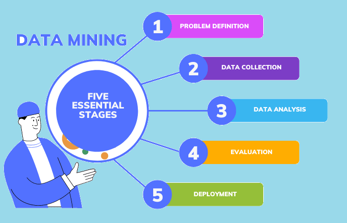
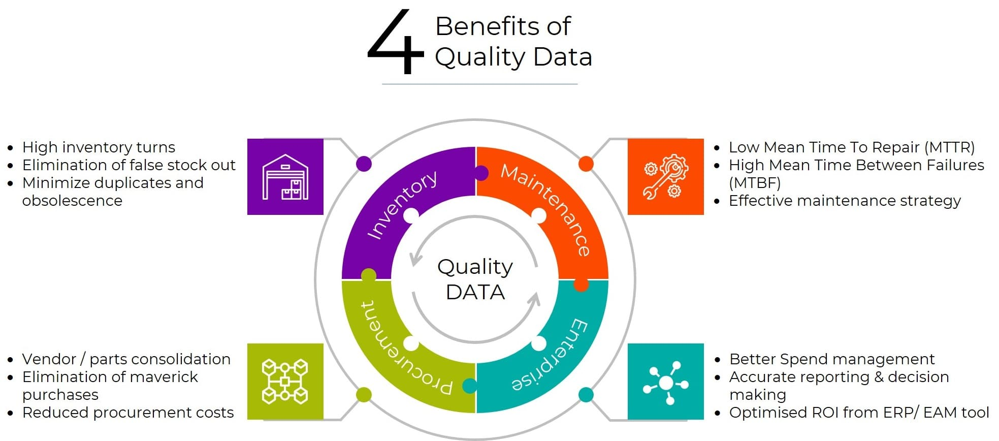

Data Mining

Data mining often referred to as web mining, involves extracting
valuable information from web data to uncover patterns, trends, and
insights. This process is integral to various applications, including
marketing, user behavior analysis, and content personalization. While
web mining offers numerous benefits, it's essential to consider ethical
issues such as user privacy, data consent, and compliance with
regulations like GDPR. Ensuring transparency and obtaining proper
consent are crucial when collecting and analyzing web data.
Applications of Web Mining
-
e-Commerce: Analyzing product reviews and ratings to
understand customer sentiments and improve product offerings.
-
Digital Marketing: Tracking user interactions to
personalize advertisements and content, enhancing user engagement.
-
Healthcare: Mining health-related websites and forums
to gather insights into patient experiences and treatment outcomes.
-
Education: Analyzing student interactions on
educational platforms to personalize learning experiences and improve
course content.
Data Processing

Data processing is the systematic collection, manipulation, and
transformation of raw data into meaningful information. This process
enables organizations to derive insights that inform decision-making,
optimize operations, and enhance strategic planning. Processing web data
involves collecting, cleaning, transforming, and analyzing information
gathered from websites to derive meaningful insights. This process is
essential for applications like market research, competitive analysis,
and content aggregation.
Stages of Data Processing
-
Data Collection:
-
Web Scraping: Automated tools extract data from
web pages by parsing HTML content. Techniques include:
-
Text Pattern Matching: Utilizing regular
expressions to identify and extract specific data patterns.
-
HTML Parsing: Navigating the HTML structure
to retrieve desired elements.
-
API Integration: Accessing structured data
provided by websites through APIs.
-
Manual Extraction: Manually copying data from web
pages into spreadsheets or databases. This method is
labor-intensive and suitable for small-scale data collection.
-
Data Cleaning:
-
Handling Missing Values: Addressing gaps in data
through imputation or deletion.
-
Removing Duplicates: Eliminating repeated records
to ensure data integrity.
-
Outlier Detection: Identifying and managing
anomalies that could distort analysis.
-
Data Analysis:
-
Statistical Analysis: Applying statistical
methods to identify trends and correlations.
-
Visualization: Utilizing charts and graphs to
represent data patterns and insights effectively.
-
Reporting: Generating summaries and dashboards to
communicate findings to stakeholders.
-
Ethical Considerations:
-
Compliance with Regulations: Adhering to data
protection laws, such as GDPR, to ensure ethical data handling
practices.
-
Respecting Robots.txt: Honoring website
directives that specify permissible data scraping activities.